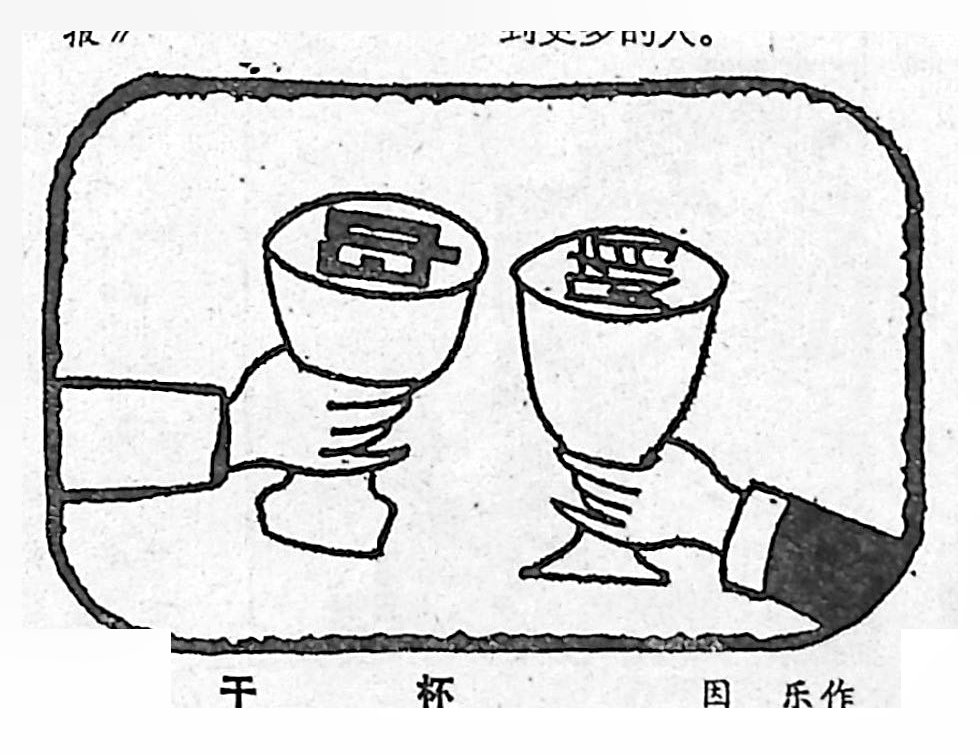

因乐 《人事》1986年第11期（总第14期），第39页
干杯
Bottoms Up
- Text in the drawing
- 印 / 贿 (one in each cup)
Seal / Bribe - Description
- Two hands raise cups to each other in a toast. One cup holds the character 印, the official seal; the other holds 贿, a bribe.
- Note
- 印, the seal, stands for official power, and 贿, a bribe, for money. The toast is power-for-money exchange (权钱交易). The characters are drawn in a blocky style and were read in review.
- Artist
- Yin Le 因乐
- Published in
- 《人事》1986年第11期（总第14期）, p. 39
- Themes
- Gifts and banquets · Privilege

Cite
Yin Le, “干杯” [Bottoms Up], Renshi (Personnel) 《人事》, 1986, no. 11, p. 39.